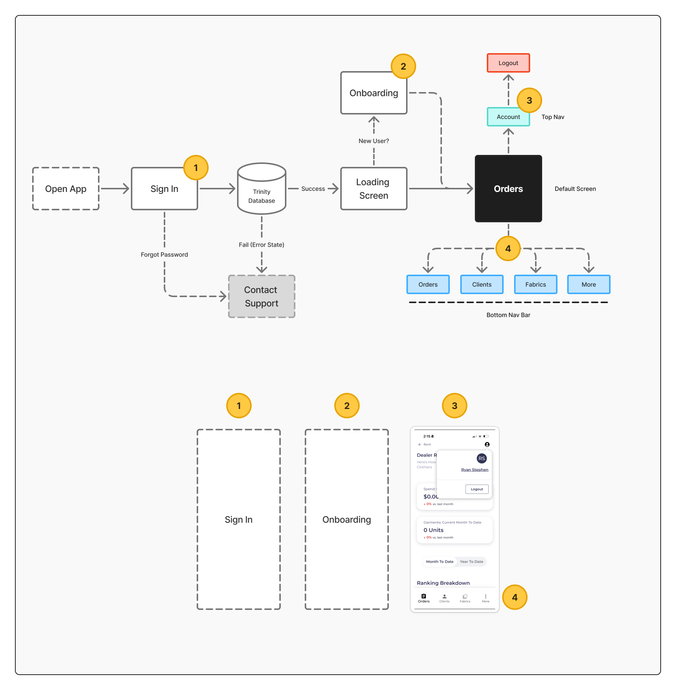
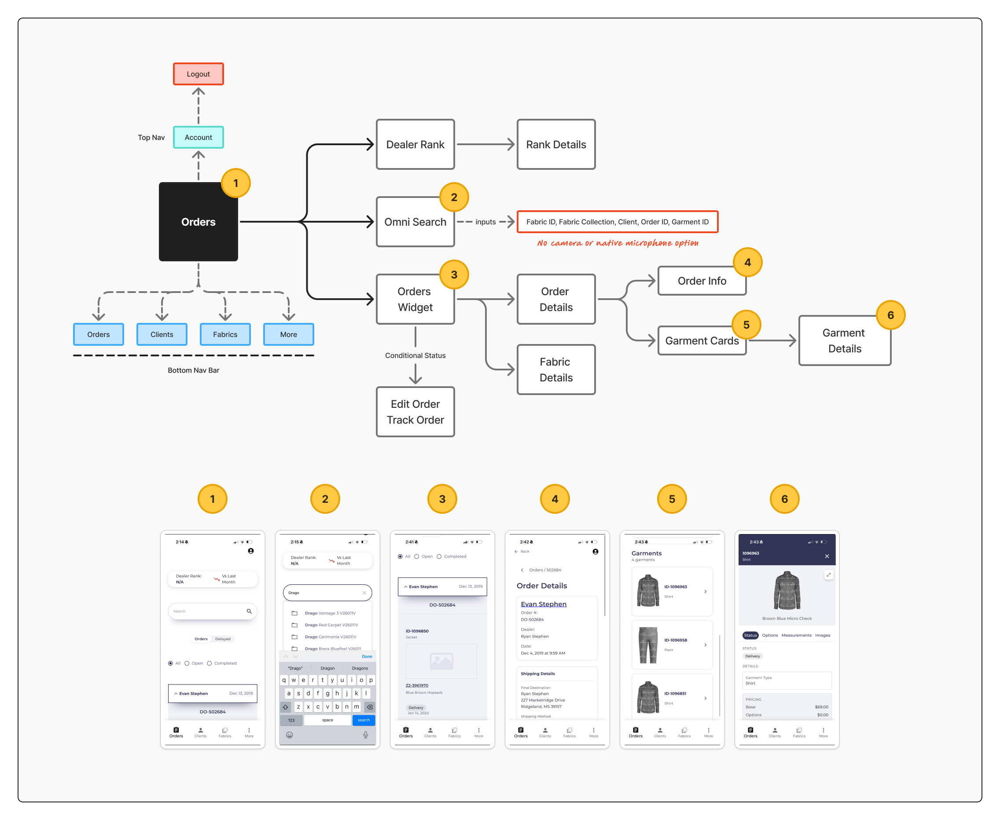
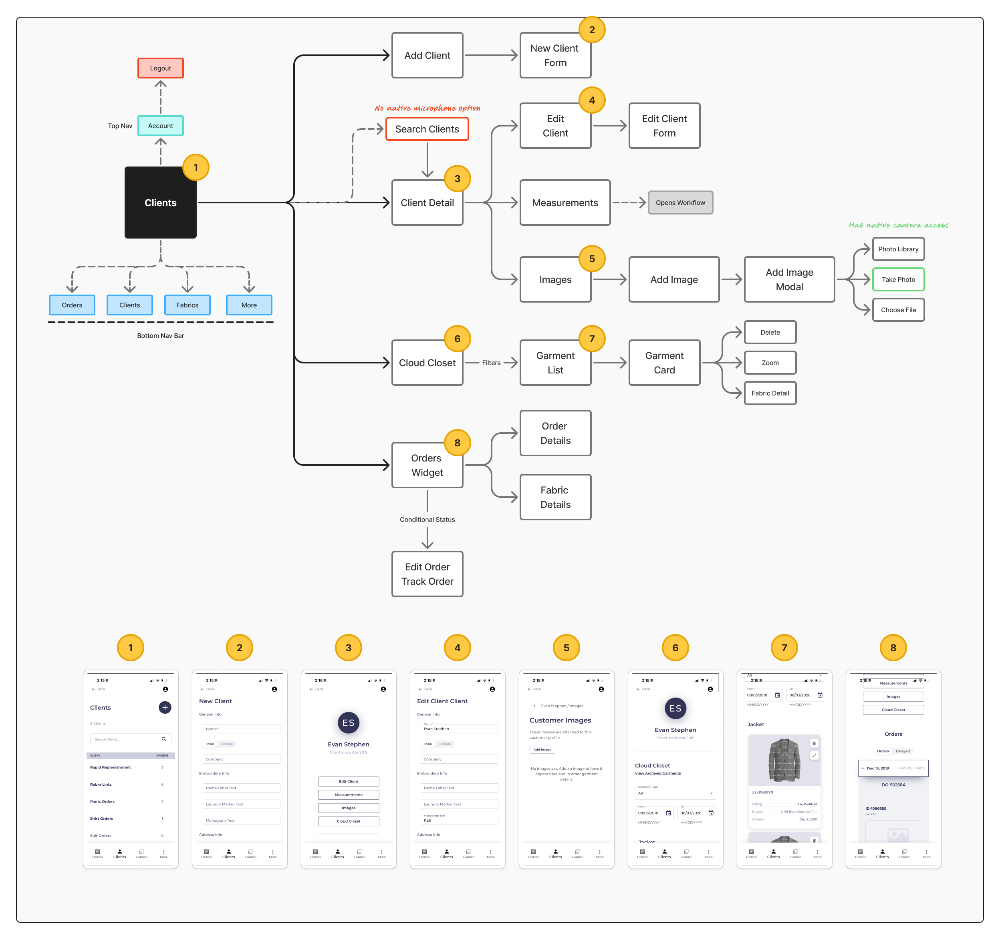
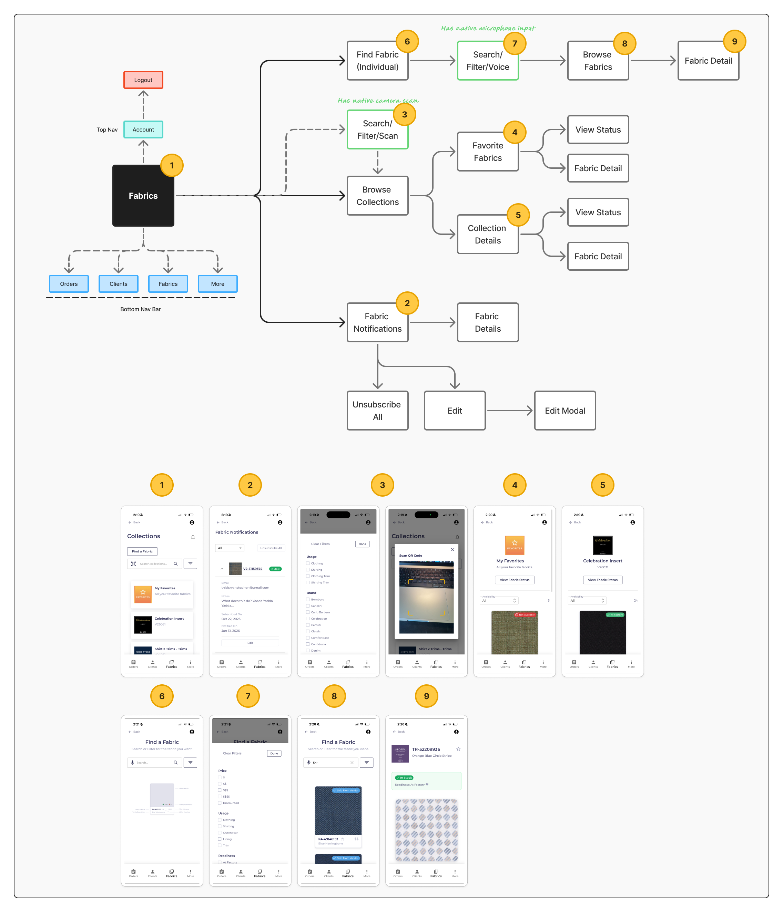
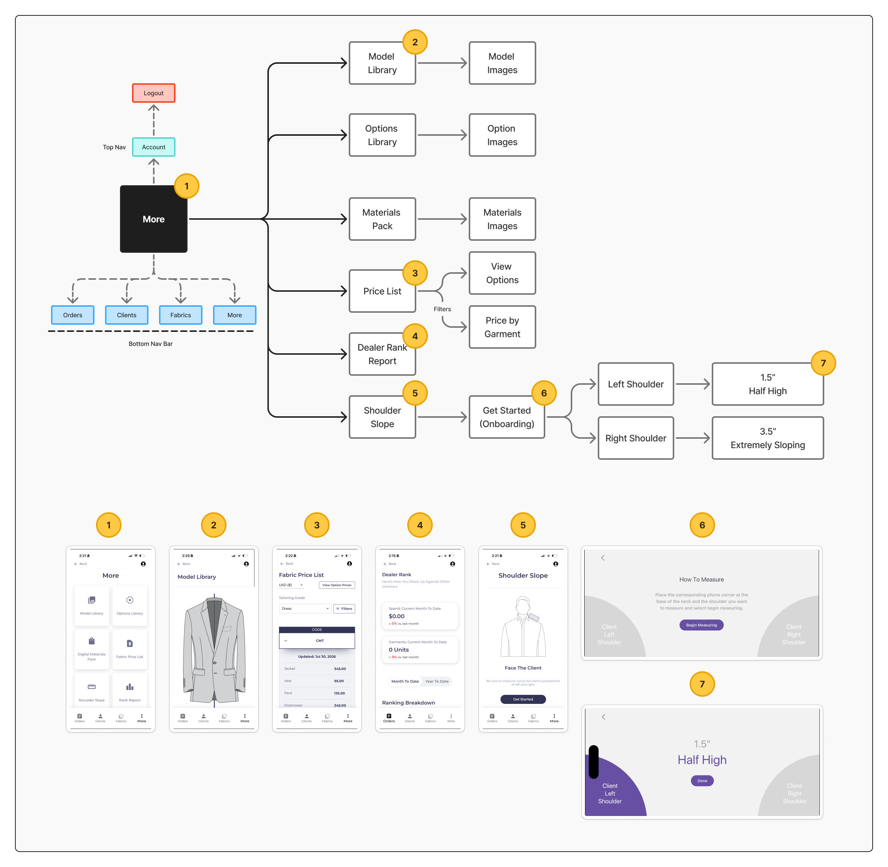

Sign in & onboarding
Opening the app routes through sign-in against the Trinity database. Returning users hit a loading screen and land on Orders (the default tab); new users pass through onboarding first. Failed authentication drops to a contact-support error state, and forgotten passwords branch off sign-in.

Orders
The default landing tab. From here dealers reach Dealer Rank (and rank details), an omni-search that accepts Fabric ID, Fabric Collection, Client, Order ID, or Garment ID, and the Orders widget — which opens order details, garment cards and garment details, fabric details, and a conditional edit / track order path.

Clients
Add a client (new client form) or search and open a client detail. From a client, dealers reach the Cloud Closet and garment list — garment cards with delete, zoom, and fabric detail — plus measurements (which open WorkFlow), an orders widget, and image capture via photo library, camera, or file.

Fabrics
Two ways in: find an individual fabric (with search / filter / voice) or browse collections (with search / filter / scan). Collections open collection and fabric details; fabric notifications support favorites, edit, unsubscribe-all, and an edit modal. Native camera scan and microphone input are called out along the way.

More
The account and secondary-tools tab. It gathers the Model Library, Options Library, and Materials Pack (each with their image sets), the Price List (view options, price by garment), the Dealer Rank Report, and the Shoulder Slope reading — left / right shoulder measured from 1.5″ (half high) to 3.5″ (extremely sloping).
